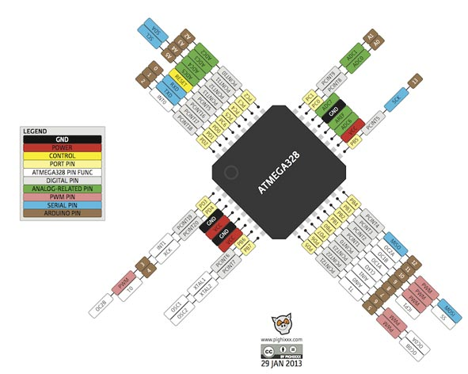
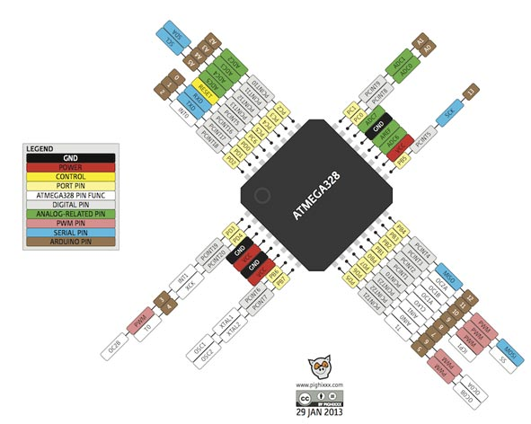
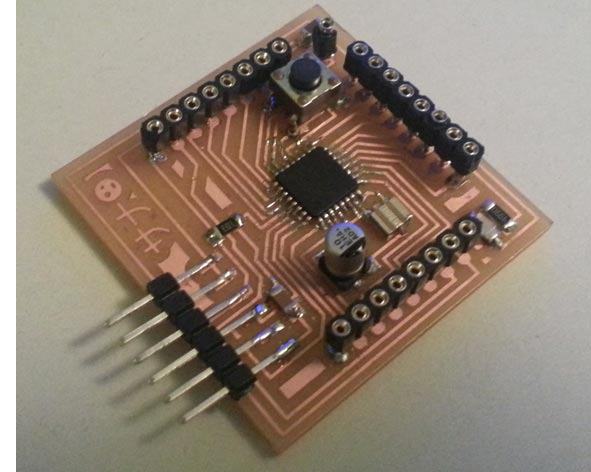
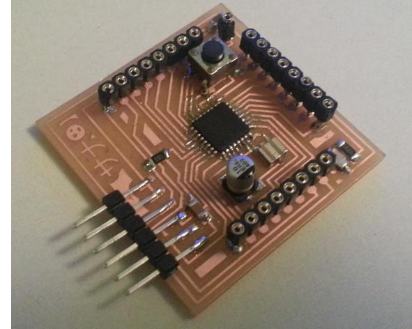

Fab Academy 2015 - Marco Sanalitro

Roll.e is a telepresence robot system. It can be equipped with a smartphone, camera or FPV system (first person view). Controllable remotely it was designed for business, educational, but also fun.
The idea is to build an economic and open source robot that can be used for conference calls, research, mapping or a better interaction in remote communication.
Before starting the project, I did a long search to understand what might be the real applications in everyday life.
The telepresence robot system existed for several years, allows people who are unable (for health reasons or simply to problems of time, space and money) to travel or attend an event. There are many studies that have been carried out, here an example:, here an example:
http://www.ted.com/talks/henry_evans_and_chad_jenkins_meet_the_robots_for_humanity
There are several examples of amateur robot, equipped with cameras, they are used to
reach places inaccessible to humans, here an example:
http://2015.officinerobotiche.it/myzharbot/
With the increasing use of teleconferencing systems, many companies are producing increasingly more innovative systems, here an example:
Roll.e is controlled with a web interface; the Python script and Arduino IDE coding the communication between the board and the Interface.
The Raspberry Pi 2 read the “controls” and send them to the main board and shield to control the “tower” and the robot. The video is transmitted by cam to web page.
STRATEGY
I believe that the product is very desirable for the market, but we must reduce production costs and dimensions. I know that building a system on a single product would not work, for this reason I think it would be interesting to collaborate with other firms or project (drones, models for diving).
The economical strategy can be the following. Keep software and hardware open source, so no income will come from those ones. We can from the other side sell an already made product in case people don’t want to do it by itself. We can also charge for advanced components (hardware / software) that can be implemented in the Robot. If I can involve other projects the system would have a good chance to work.
I see it as an instrument that can be implemented according to the need of designers and users. I think that can be used as many proposes:
- Remote Travelling: travel and visit remote places
- Mapping tool: creation of 3dimentional Models
- Science Research: recollection data, by equiping it with sensors
- Interactive Sanitary Therapy: psychological therapy; Support to other medical therapy
- Interactive Education
- Security/Surveillance
- And much more...


Mechanical (&) DESIGN
During the academy, the design of my project is developed according to the knowledge acquired. The final form of the robot I meet many degrees of aesthetic appeal and practicality.
The soft and thin lines, make it pleasing to the eye, while the webcam is able to "humanize" a little (even if I wanted to put two webcams). This, to attrack the younger market audience.
Mobility is the key part of this project, for this reason the robot is equipped with two DC Motors (to move and steer the cart, Recovered from a broken printer), using gears system in PLA 3d printed and two servo, to move the “tower” camera ( PLA 3d printed). The systems will be powered by 5V and 12 V. At the base of the tower it is possible to connect different types of devices: my first idea involves the use of 3d cam and the FPV system, but probably for now I will be using a smartphone or a simple Cam to reduce costs. The shell is made with composite system and the internal structure in PLA 3d Printed .
Mechanical cost: 35/40 € (including sheel)
The structure and the robot body has been made during the week of composite assignment:
The first step was revise and made a new 3D Model of my Robot Roll.e to make the mold on a polyurethan panel ( 600x800x100 mm of which profits 500x600x60 mm).
I split the body into two parts to facilitate the process of composite and I started to draw the mold: knowing the height of the tool (3,5 cm from the mandrel to final tool) I could draw some inclined walls, in this way the machinery does not come in contact with the model when milling (similar to the process of molding and casting assignment).
I Imported the .stl file in the Meshcam software and I set the two milling process which are the Roughing (tip 8 mm flat-head) and the Finishing (tip 3.2 round-head).
Roughing Settings:
- toolpath diameter: 8 mm endmill;
- feed rate : 1100 mm;
- plunge rate: 500;
- spindle speed: 12000 rpm;
- stepover: 5 mm.
- depth per pass: 4 mm.
Finishing Settings:
- toolpath diameter: 3,2 mm ballmill;
- feedrate: 1100 mm;
- plunge rate: 500 mm;
- spindle speed: 12000 rpm;
- stepover: 1,2 mm.
- depth per pass 1 mm.
- After the software has calculated the cam, I have saved the two .iso files and have them imported into the milling software Isons.
- I cleaned the CNC before to put and anchor the polyurethan block because every mm under the material may be a mistake during the process.
- I set the X,Y (0,0) and the Z-axis home coordinates values and I modified the gcode to start the milling process.
- After the Roughing and Finishing process i had lightly sanded to complete finishing.
Wet lay-up is a molding process that combines layers of reinforced fiber with liquid resin to create a high quality laminate. This process involves the positioning of reinforcement material into or against a mold in layers. These layers are then impregnated with a liquid resin system, either with a brush and roller, to ensure a good wet-out of the reinforcement material. The step is repeated until reinforcement thickness is achieved. Curing can be performed at room temperature or under heat, depending on the selection of the resin system. This can be accomplished with the use of a vacuum bagging process.
Equipment, Components and Material:
- Peel Ply-Plastic Laminate;
- Holes-Breather;
- Bleeder;
- Linen Fabric 200 g/sqm of Bcomp°;
- Air-Vacuum Bag;
- Epoxy resin and Hardener (2:1);
- Release and Wax;
- Gelcoat and Reagent (100:2);
- Brush and Roller;
- Protection: eye, mouth/nose and hands.
The ideal ratio between resin and fabric it's 30% resin and 70% fabric. In this specific case, considering the textile material (linen) the ratio considered is 50% resin and 50% linen. The specific weight of linen is 200 grams/square meter. The three layers total area is approximately 0.3 square meter. So, the linen weight is approximately 60 grams. 60 grams of resin are required and considering the ratio 2:1 (resin:hardener) the hardener weight is 60/2 grams equal to 30 grams.
Proceedings:
- I Lightly sanded the mold and clean;
- I cut three pieces of linen of the size of the mold (1 with the texture of fabric at 45 ° to reinforce the composite);
- I also cut Breather, Bleeder and Peel Ply of the size of the mold (the Breather 3 time the dimension of the mold) ;
- I Put 2 Coats of Epoxy resiner and Hardener mixture (2:1 ratio) to completely cover the mold;
- I put 4 Coats of Wax Mold Release each 30 min;
- I put 3 Layer of Linen fabric and Epoxy resin mixture using brush and roller(quickly), making sure to evenly distribute and cover all parts of the mold( I used some small piece of linen to adjust empty areas);
- Then I covered using Peel Ply, Bleeder and Breather (where there will be the valve of the air-vacuum I bent breather to have greater absorbing part)in this order;
- At this point I put it all in the Air-Vacuum bag, I closed the valve anche the bag and I turned on the air pump to created the vacuum;
- after a night the model was ready to be removed, but The release did not work very well and I had to break the mold;
Unfortunately the model didn't come as I wanted, I think that during the process wet lay up, I used too little resin; Furthermore the release wax did not work very well, despite the many layers I used.
For this reason I had to work a lot to fix the the model:
- I cut the edges and sanded many times to reduce the imperfections;
- When I got an acceptable and uniform result I put 2 coat of Gelcoat mixture;
- I Lightly sanded the mold and clean and the end, I have the "body" or "shell" of my robot;
- After this I used the drill to open the hole on the sheel, for the passage of wires and the positioning of the screws stiffening;
The design of the mechanical part was not difficult: I used the software Rhino and I used an open software Gearotic 2.0 to generate Gears.
The key points of this design were: studying the joints of all elements (I did some test prints to see how the PLA is dilated extrusion, especially in the system of gear motors craft I invented with only two gear and the pieces that connected to servo motors allow movement of the tower.
I adjusted files and exported .slt and open every single the file with the software Cura. Basic settings I used:
- QUALITY -
LAYER HEIGHT (mm): 0,2
SHEEL THICKNESS (mm): 0,8
- FILL -
BOTTOM/TOP THICKNESS (mm): 0,8
FILL DENSITY (%): 15
- SPEED AND TEMPERATURE -
PRINT SPEED (mm/s): 120
PRINTING TEMPERATURE (°C): 185
BED TEMPERATURE (°C): 0,8
- SUPPORT -
SUPPORT TYPE : TOUCHING BUILDPLATE
PLATFORM ADHESION TYPE : BRIM
- FILAMENT -
FILAMENT DIAMETER (mm) : 1,75
FILAMENT FLOW (%) : 100
- MACHINE -
MACHINE NOZZLE SIZE (mm) : 0,4
- RETRACTION -
RETRACTION SPEED (mm/S) : 40
RETRACTION DISTANCE (mm) : 4,5
- QUALITY (Advanced) -
INITIAL LAYER THICKNESS (mm) : 0,2
INITIAL LAYER LINE WIDTH (%) : 100
- SPEED (advanced) -
TRAVEL SPEED (mm/s): 150
BOTTOM LAYER SPEED (mm/s): 20
Finished printing the pieces in pla, I assembled all the parts, Including two bases that have been mounted to the internal boards.
The shell is a bit 'distorted and I'was not had the all 4 wheels on the ground at the same time.
To solve this problem, I cuted using the laser cutter a piece of wood, in this way I could straighten the body.
Solved this problem, I did 2 day of test, to control everything. All works perfectly!!!
The movement of the robot is similar to a tank: to facilitate the movement just add two belts. for the prototype I chose to use regular 4 wheels, but I made a few adjustments:
I added the double-sided scotch spongy and a layer of rubber to increase friction of the rear wheels and I added Scotch adhesive smooth, to facilitate the slip of the front wheels.
Download Files
Rhino and STL for milling "Shell":
Rhino model and 3ds:
STL for print "Mechanical":
Programs: Rhinoceros, Cura, Meshcam.
Machinery: Delta Wasp 40 70, VREL CO2 ME-1300.

 

 



Electronics
Using a simil Arduino based on Fabkit 0.4 I adapted the board to my needs. Then I did the shield to control motors dc and servos control, designed by me. I draw in Eagle the boards and I milled them using Roland monoFab SRM-20 milling machine. Then I soldered each components. I wrote the C code in Arduino IDE and I flashed the board. I used and improved the interface created during the interface assignment. I decided to buy a Raspberry Pi 2 (following the advice of Neil during a revision) to transmit the video at web page and I programmed a script that would allow me to control the robot using a web page (output).
Here I found a problem: the communication of Raspberry has a logic of 3.3 V (although it can be supplied with 5V) while the main board has (simil Arduino) a 5V logic.
For this reason I decided to build a logic converter, but I found schemes in internet and I realized that to build it would have paid more than getting a board already done: I decided to buy it.
I made a simil Arduino based on Fabkit 0.4
Board Components:
- FTDI Communication
- 2 Unpolarized Capacitors 1206 0.1 uf
- Unpolarized Capacitor 1206 1 uf
- Electrolytic capacitor 10 uf
Board cost: 8,12 €
To write the bootloader I used the IDE from Arduino. It's necessary choose on Tools > Board > Arduino Pro or Pro mini (3.3V, 8) before and press the Reset Button when you are making the booloader
Drawing the shield in eagle, I realized the need to protect the PCBs, for this reason I decided to design a shield that connects "face to face" with the main board: in this way the components are protected inside. To simplify the programming of the microcontroller board and the connection to the dc motors and servo, I also put sockets on the back of the shield
To control direction and speed of rotation of the motors I used two H bridge. I studied the datasheet of the components to understand how this works: it is possible to reverse the polarity (and therefore the rotation) using an internal switch. The component also allows the entrance the 12 V necessary for the functioning of the dc motors.
Shield Components:
- 2 H Bridge
- 6 PCB connector CMM5-2
- 3 Female Header 8 pin
- 2 Electrolytic Capacitor 10 uf ]
- Unpolarized Capacitor 1206 0.1 uf
- Resistor 1206 0
- Voltage regulator ncp1117 sot 223
Shield cost: 8 €
The control of the robot will be with wire(only for the prototype): in a second fase, I would add a wifi shield control.
milled, soldered and checked with the tester the boards, I could do the first tests with the codes: I realized that unfortunately some pins were defective (they could not get consistently instructions) for this reason I was forced to use two jumpers (luckily I had planned the double face shield, this did not result in changes on the board).
Then I had another problem: I read many forums arduino and I talked with some colleagues, everyone told me the servo motor operates using PWM pin, but instead I found out that they need to analog read pin, fortunately, the change has been very easy to do.
Having available all parts of the "circuit" I was able to wire the entire system according with datasheets and my scheme. To make this easier, I screwed inside the robot base of support for all cards.
Unfortunately, the many errors are due to the little time and some of my distractions, but in the end everything was adjusted and worked perfectly.
It was an excellent opportunity to study some issues that I have always loved.
Download Files
Eagle:
PNG:
{kind=link}
{kind=link}
{kind=link}
{kind=link}
{kind=link}
{kind=link}
Programs: Eagle, Photoshop, IDE Arduino.
Machinery: Roland SRM-20.


Programming
During the course and the assignments I learned how to code with Arduino IDE and (really beginner) with Python. For the final project I wanted to take another step forward.
I decided to buy a Raspberry Pi 2 (following the advice of Neil during a revision) to use a webcam as input and I programmed a script that would allow me to control the robot using a web page (output).
The Python script and Arduino IDE coding the communication between the board and the Interface. The Raspberry Pi 2 read the “controls” and send them to the main board and shield to control the “tower” and the robot. The video is transmitted by cam to web page.
with the "design" the sketch to program the microcontroller of the main board. I used Arduino IDE:
I started using Arduino IDE and I wrote the C code; I programmed the microcontroller to read (using serial port) the signals coming from the interface:
if (Serial.available()) { command = Serial.read(); }
and I imposed on each individual signal a basic command:
(Forward command example) if (command == 'U'){
analogWrite(hbridge_in1,250); //input1 dc motor n°1
analogWrite(hbridge_in2,0); //input2 dc motor n°1
analogWrite(hbridge_in3,250); //input1 dc motor n°2
analogWrite(hbridge_in4,0); //input2 dc motor n°2
}
Using (the many) online forums of Raspberry and studying short tutorials on youtube (during the explanation, I linked ones I used mainly) I configured the board and I did a python script that can read the commands from the web and send them to the main board microcontroller.
First of all I used Noob (the operating system install manager) to install the operating system on the Raspberry Pi SD card. I choose Raspbian, a Debian-based distribution optimized for the Raspberry Pi, as it's well documented and widely used.
As I work with a laptop and don't have any extra keyboard or monitor, my first task was to activate remote access. In order to do this, I enabled the SSH server from the Raspberry configuration menu. With the SSH server enabled it's possible to connect to a remote computer, accessing the bash shell as begining in front of the computer itself, withoutmonitor/keyboard or mouse.
So i installed Apache 2 (apt-get it) and discovered that the SFTP server was already running (it's a feature "included" in the SSH server) so i drop out the use of FTP for file trasfert&editing.
As soon as i have tried to modify the default index page i found my first problem: The linux permission. I lost a lot of time trying to figure out what to do. In the end I find this solution:
-Create a new user group (E.G. "upload")
-Add my user to the newborn group
-Use chown to set the www directory (aka the web base) has owned by the "upload" group.
(source: http://ubuntuforums.org/showthread.php?t=1562419&p=9774644#post9774644)
I had to repeat that also for the Cgi-Bin directory, the one in with python script may be executed.
I was not very sure if this is the better solution, but in this stage of my project development security issues were not so important. In the future I will have to learn about unix server management, but it's an hard task, and better time will come to do that.
So i got my personal pocket webserver online, and i was able to start coding. I studied python during fab-academy, but never approach to web development (the so called cgi scripts).
Fortunately in python there is a library (or better to say, a module) for everything, so i started making a first "try" script, to assure everything was working as i expected.
The idea is simple: There is an HTML page with a form that, using the "POST" method, pass some arguments to the python script with output them to the Fabkit, via serial port.
Add the www-data account to dialout group, to make the serial accessible for the python script
(source: https://www.raspberrypi.org/forums/viewtopic.php?f=32&t=40693)
Trick to use an image as a button in html: (source:http://stackoverflow.com/a/23016230) It would be better to use div instead of table to make the html front end, but I did not have much time.
When HTML ad Python exange data, using the get method, there is no need to worry about the sent string leght.Instead, when comunicating via serial port is mandatory to have fixed messages leght. This happens becouse of the buffer. When the MCU receive serial data it puts them into the buffer, a special portion of the RAM, so the user can use function like Serial.read on Arduino to get them in a variable whenever is needed.
Serial communication mean to send data byte per byte, one after another. So, for example, if we are sending the string "Ciao" we are actually sending a byte for the letter "C", one for the letter "i", ecc. If we read the buffer before the last character is received we will find a truncated string, so the command parsing will not work. A good way to avoid this is to check for a terminator character, such as the line feed, to be sure the string is fully received. A easier way (if we don't need to send long data) is to limit them to a certain amount of data, such as one single byte. In this case i choose the easy way, sending only a single byte with an integer number. This limits the possible combination to 256 (2^8) enough for this project's need. Each number have a meaning for the at-mega firmware, and it respond to an action.
Read example: When html post U, python send 1 via serial to the at-mega328 p (microcontroller), so the robots move forward
Movement - HTML Post Code- Arduino Code:
- Forward - U - 1
- Backwards - D - 2
- Turn Left - L - 3
- Turn Right - R - 4
.Turret handling.
- Spin right - CCW - 5
- Spin left - Cw - 6
- Tilt up - TU - 7
- Tilt down - TD - 8
- Reset - H - 9.
It was very interesting to study the communication between various systems of code, I hope to explore this topic.
After programming the main board with Arduino Ide using FabISP, I tested the Interface from PCs and smartphones to understand how much there was delay between command and execution.
Unfortunately I have not found a way to integrate an html page to send the video streaming and the another page html (with a "form" that uses "post" method) to send at python script the robots commands on a single page html.
Download Files
Arduino IDE:
Python:
html interface and images:
Programs: IDE Arduino, Python, Html, Apache 2, Motion Camera.